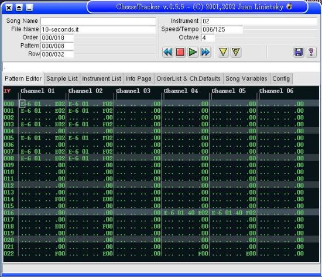

למה כדאי לי לעבוד עם לינוקס במקום עם חלונות?
נאסף ונערך על ידי CooL_SPoT (רם מתתיהו) מדיונים שנערכו בפורום Whatsup
מותר להעתיק מסמך זה וחלקים ממנו בתנאי שיוזכר המחבר הנ"ל |
" כי אתה כנראה שוכח את כל הפעמים בהם תקעת את הראש בקיר. "
( dolfin )
אז למה באמת לינוקס עדיפה על חלונות?
The old paragrapg tags are no longer in use. Please use "chapter"|"section"|"subsect""' instead of "subtitle" | "subtitle2" | "subtitle3"." יש לי צורב HP ישן. איטי אבל סוס עבודה. הדרייבר (הלא רשמי) ל 2000 עבד לי פעם עד ששבק ול XP בכלל לא פותח דרייבר כזה. הצורב ממשיך לשרת אותי בנאמנות תחת לינוקס. "
" כנ"ל לגבי Visor שקניתי בזיל הזול כי הוא מדגם פרהיסטורי. משרת אותי בנאמנות תחת לינוקס (חיבור ה USB שלו זוהה בלי בעיה על ידי המנדרייק). מאחר שמדובר בדגם ישן הוא מגיע עם דרייבר ותוכנת סינכרון ל 98 שלא עובדת על ה 2000 (שיש לי בעבודה). לאחר כמה נסיונות נואשים להפעיל אותו תחת 2000 ויתרתי. "
" היום התנאי הראשון שלי לרכישת חומרה או שרות היא תאימות ללינוקס. אני ממש לא מצטער על זה - להיפך - גיליתי שחברות שתומכות בלינוקס בד"כ גם נותנות שרות טוב יותר ללקוחותיהן. כשחברה ערה לצרכי לקוחותיה - אז היא נוקטת במדיניות זו מכל בחינה שהיא ולא רק בהקשר של לינוקס. "
( dovix )
The old paragrapg tags are no longer in use. Please use "chapter"|"section"|"subsect""' instead of "subtitle" | "subtitle2" | "subtitle3".
" בגלל השליטה המוחלטת שלהן בשוק אבל גם בגלל האינטרס המסחרי שלהן, להיות מסוגל לעשות עם המחשב מה שאתה רוצה. במילים פשוטות המגבלות המסחריות על הפצה ושימוש בתוכנה ובמערכות הפעלה יוצרת מצב שבו חברה מסחרית שלא מעניין אותה כלום מלבד ההכנסות שלה ושביעות הרצון של בעלי המניות משפיעה במידה רבה על קצב ההתפתחות הטכנולוגית והיכולת להמציא ולחדש כתוצאה ממגבלות של רישיון, פטנטים, זכויות יוצרים ועוד. "
" קח פרוייקט כמו כנרת למשל שמדברים עליו פה די הרבה. יש כאן חבורה של "ילדים" וכמה מבוגרים שהחליטו שבא להם סביבת עבודה שמכילה את כל מה שהם צריכים כדי לבצע את המטלות שניתנות להם בבית הספר. מערכת החינוך לא יכולה לממן את התוכנות ומערכת ההפעלה והתלמידים צריכים לרכוש בעצמם, להעתיק או פשוט להשאר מאחור אם במקרה ההורים שלהם לא מסוגלים להשקיע ברכישת מחשב שאפשר להתקין עליו חלונות XP. "
" אם תסתכל קצת מסביב ותתעמק בתופעה תראה שיש אלפי פרוייקטים שמסתמכים על האפשרות לעבוד עם תוכנה שאין עליה מגבלות רישוי מסחריות כדי לייצר כמות אדירה של תוכנה ופתרונות שהיה בלתי אפשרי אחרת. אנשים יכולים לקחת עבודה של אחרים, להרחיב לשכלל ולתרום בחזרה. הדרך היחידה לקידמה היא באמצעות שיתוף מידע ולא הסתרתו. "
" לינוקס הצליחה קודם כל בשרתים והיא לא צריכה להתנצל על שום דבר. היא פשוט טובה יותר. שולחן העבודה הוא יוזמה יחסית חדשה וקצב ההתקדמות בה מדהים לדעתי. אם בחרת להוריד רדהאט מאינטרנט ולהתקין מבלי להבין מה אתה בדיוק עושה, אני מבין שאתה יכול להתקל בקשיים. אם תשקיע קצת יותר מחשבה "
" הפיתוח של הקוד הפתוח חי בשלום גם אם הצד המסחרי של התופעה ובתמורה אנשים ללא ניסיון או ללא עניין להבין מערכת הפעלה ברמה הטכנית יכולים לההנות מהפצות יותר נגישות ומלוטשות כמו לינדוס, קסנדרוס וליקוריס. מנדרייק, רדהט ודומיהן מיועדות לאנשים עם קצת יותר ניסיון או למשתמשי קצה בארגונים בהם הם לא אמורים להתעסק בהתקנה וקינפוג שלהם. "
" אחרי כשנה של עבודה עם לינוקס, למרות כל הקושי אני חושב שבשנה האחרונה לינוקס התקרבה למצב שבו היתרונות שלה גדלים על החסרונות. עם ההצלחה שלה וההתבססות המסחרית תגיע גם תמיכה בדרייברים וכדומה דברים שאתה מזכיר. זה כמו עם המצב של אפלייה מתקנת. אי אפשר לצפות ממי שנמצא בעמדת נחיתות לשפר את המצב שלו מבלי לקבל דחיפה ועזרה. במקרה הזה אנחנו זה שצריכים לעזור וזו בהחלט אידאולוגיה אבל גם הנאה טכנולוגית צרופה. "
" אחרי שנה של עבודה אני יכול להגיד לך שעבודה על חלונות כשאני נאלץ מדי פעם היא כמעט בלתי נסבלת. חסרה לי האפשרות להתאים את המערכת לצרכים המדוייקים שלי, להוריד תוכנה באופן אוטומטי מבלי לחפש קראקים או לקנות אותה באינטרנט, לגשת למילונים מקוונים ותוכן לא מסחרי נוסף בלי מגבלות ובלי לחשוש שמישהו רושם את כל מה שאני עושה, להעזר בכלים המתוחכמים במוזילה לחיפוש ולקבל גישה לכל המידע הזה ללא כל מגבלה. "
" הדוגמה הכי מובהקת לדעתי להבדל בין קוד פתוח וקוד מסחרי הוא החלונות הקופצים. שאלת את עצמך מדוע IE הוא הדפדפן היחיד שלא חוסם אותם? שאלת את עצמך למה אין כפתור נגיש בסרגל הכלים לחסימה ומחיקה של קוקיס? שאלת את עצמך למה מיקרוסופט מחייבת אותך להסכים לכך שהיא תבדוק אילו קבצים יש לך אם אתה מתקין מדיה-פלייר? שאלת את עצמך למה מיקרוסופט מעבירה מידע על כל התוכנות שמותקנות במחשב שלך כשאתה משתמש בשירות העדכון המקוון? שאלה את עצמך למה מיקרוסופט כל כך לא אוהבת את לינוקס? אחרי הכל אם חלונות באמת כל כך טובה ממה יש לה לפחד ואתה דוגמה מצוינת לכך. מאוד קשה לשנות הרגלים ועוד יותר קשה לגייס אנשים למען מטרה שלא תמיד ברור למה היא כל כך חשובה. "
" זה פשוט משעמם לעבוד בסביבה טכנולוגית שמדכאת יצירתיות ומנוהלת על ידי קבוצה של אנשי עסקים חמדניים שלא מבינים שאי אפשר למנוע מאנשים לעשות טוב יותר. "
( dittigas )
" כשנפלה לך תוכנה ואיבדת עבודה של שעות. את כל המסכים הכחולים, ואת היישומים שביצועו פעולות לא חוקיות. אחד הדברים האחרונים שאתה יכול להגיד זה שחלונות יציבה ומנהלת את הזיכרון טוב. כיוון שהיא לא נותנת לך שליטה בדברים האלו, ואם אין לך שליטה בניהול הזכרון של המערכת, היא לא תתאים למחשב שלך במאה אחוז. כאן ללינוקס יש יתרון ברור. "
( dolfin )
נפילת תוכנה בלינוקס שאינה גורמת להתרסקות המערכת מול מסך המוות הכחול המפורסם של חלונות (למעלה). הנפילות מתייחסות לנפילות הנפוצות ביותר ולא לנפילות באותה רמת קריסת מערכת.
The old paragrapg tags are no longer in use. Please use "chapter"|"section"|"subsect""' instead of "subtitle" | "subtitle2" | "subtitle3"." בהתחלה כשהשתמשתי בלינוקס הייתי זקוק למערכת חלונות לייד, עד שגיליתי שלכל מה שעלה לי כסף בחלונות (האמת היא שלא עלה כסף, אלא השתמשתי בכל מיני time limited products ושרברים (shareware) שעצבנו אותי מאוד) עכשיו קיבלתי בחינם ועם ביצועים יותר טובים. יש לי גם 2 דוגמאות טובות (שלא תגידו שאני מדבר באוויר): "
" 1. impulse tracker : זו תוכנה שמבוססת דוס, עד ל98 היא עבדה, אבל אחר כך כבר לא (בגלל שהתמיכה בדוס בXP היא על הפנים) והתבאסתי שאני לא יכול להרכיב מוזיקה כמו שאני אוהב למזלי גיליתי שבלינוקס דאגו לי ובנו תוכנה מקבילה שעובדת עם אותו סוג קבצים כמו של ה - cheese tracker "
"
 2. goldwave : חוץ מזה שהתוכנה הייתה shareware, משמע כל זמן מסויים הייתה נותנת לי הודעה להירשם, היא עבדה לאט כמו צב, כשחתחתי לדוגמא חלק מהתחלה של קובץ WAV זה היה לוקח לפחות כמה דקות. כאשר גיליתי את תוכנת rezound אשר מבצעת את אותן פעולות (בערך) ראיתי שאת אותה פעולה לקח לי שנייה או שתיים לעשות. "
( CooL_SPoT )
The old paragrapg tags are no longer in use. Please use "chapter"|"section"|"subsect""' instead of "subtitle" | "subtitle2" | "subtitle3".
" שאני חייב רישום כדי להשתמש בה ? שמשנה את רשיון המשתמש שלי אם אני רוצה לבצע עדכוני אבטחה (ובטח עדכנת sp1 ל-XP, נכון שקראת את הסכם המשתמש ?). "
" בגלל היכולת להציץ בקוד כמעט אין בעיות אבטחה ללינוקס ואם יש אז מופיעים תיקונים באופן כמעט מיידי, וכל תיקון כזה הוא נקודתי, לא כזה שיכול לדפוק את כל המערכת שלך (בגלל זה slammer התפשט כל כך ופגע אפילו ב-MS. במקום לתקן את הפירצה ה-service pack שינה כל הרבה דברים ב-SQL Server שהרבה admins, כולל אלה של MS העדיפו לא להתקין אותו ולהסתכן עם פירצת האבטחה!). "
" אפילו למשתמש רגיל בעל מחשב אחד שלא רוצה לגנוב הפרש המחיר הוא מאות דולרים (גם אם הוא קנה את הלינוקס שלו במחיר מלא עם קופסא ותיעוד ולא הוריד חינם מהרשת). זה לא יתרון עבורו? "
" ואם אני בעל עסק, ויש לי 20 מחשבים? 100 מחשבים? זה לא יתרון? ובמדינות העולם השלישי שמחיר של office עולה יותר ממשכורת חודשית זה לא יתרון? "
" הכיף של לגלגל את ה-BSA מהמדרגות אם הם יפנו אליך, זה לא כיף? אתה רוצה להגיד לי שאתה לא רואה יתרון כאן? "
( mksoft )
The old paragrapg tags are no longer in use. Please use "chapter"|"section"|"subsect""' instead of "subtitle" | "subtitle2" | "subtitle3".
" החסרונות בחלונות בקצרה: "
- וירוסים
- מסכי מוות כחולים
- המדפסת לא עובדת? ריסט
- התקן חדש? ריסט
( pacman )
| מסמך זה עובד ונערך עבור גנו/לינוקס כנרת, תוך שימוש בתוכנה חופשית בלבד. |
| לינוקס הוא שם רשום של Linus Torvalds; יוניקס הוא שם רשום של ה Open Group בארה"ב ובמדינות נוספות, Windows הוא שם רשום של Microsoft Corporation. כל שאר השמות הרשומים וזכויות היוצרים שייכים לבעליהם. |
חשוב לדעת! גנו/לינוקס כנרת מסופקת "כפי שהיא", בלא אחריות מסוג כלשהו, בין אם מפורשת ובין אם משתמעת, לרבות, אך מבלי למעט מהאמור, האחריות המשתמעת למסחריות והתאמה למטרה מסוימת. בעלי זכויות היוצרים ו/או מפיצי התוכנה לא ישאו כלפיך באחריות לנזקים, לרבות נזקים כלליים, מיוחדים, משניים או תוצאתיים כלשהם, הנובעים מהשימוש או מאי-היכולת להשתמש בתוכנות המסופקות. עליך .לקרוא בעיון את רישיון השימוש המלא ולהסכים לנאמר בו לפני השימוש בהפצה זו.

|